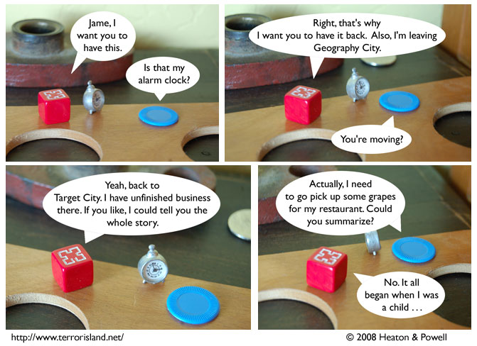

Strip #265
— Wednesday, February 20, 2008
Gunpowder knows that a story loses precisely half of its aesthetic value when abridged.
Notes, Thoughts, &c.
Ben’s Notes
Go look at this. I just found out about this so-called “sho” today. It’s a Greek letter (sort of), but it looks almost exactly like a thorn. Seriously, what the hey?
Lewis’s Notes
Someone asked me about why I would endorse trialetheism rather than quadriletheism. I explained to them, as I now explain to all of you, that it would be patently absurd for a single statement to be true, false, delicious, and unappetizing at the same time. So, clearly, we must limit ourselves to at most three of the four at once.